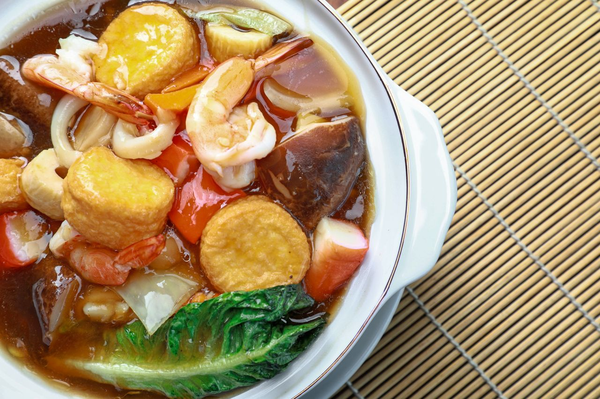
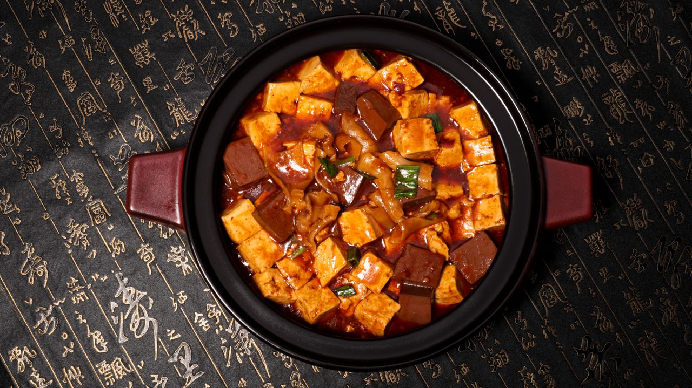
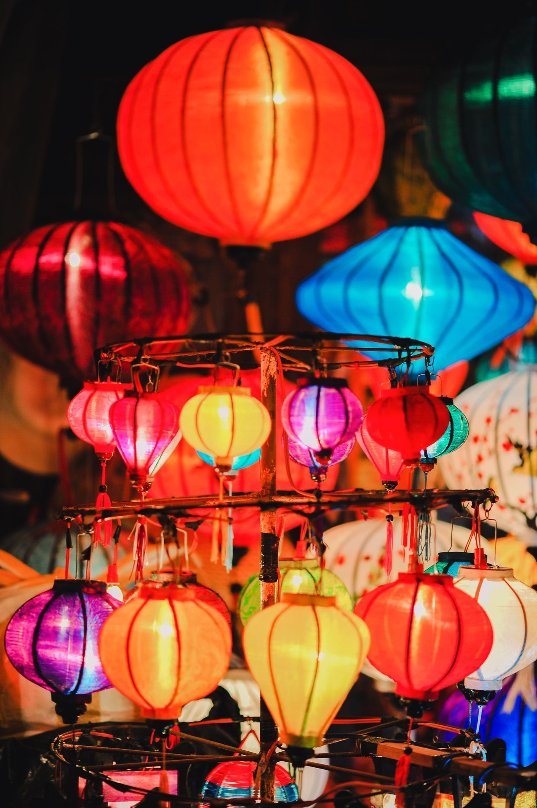
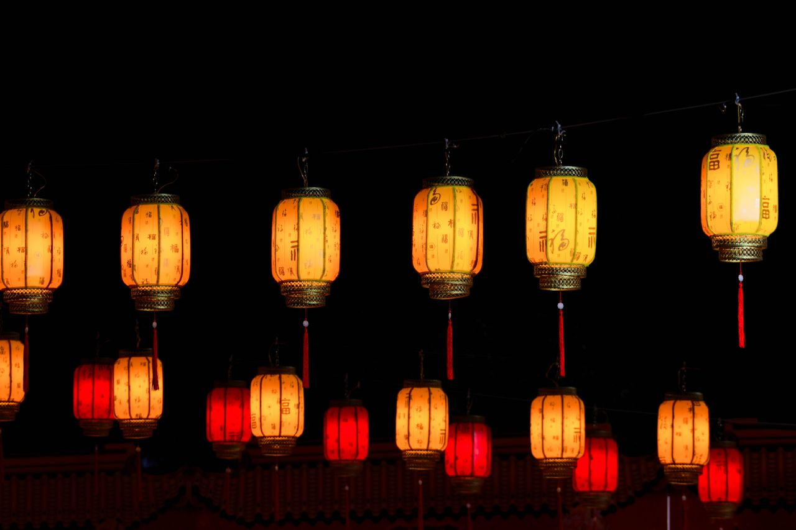
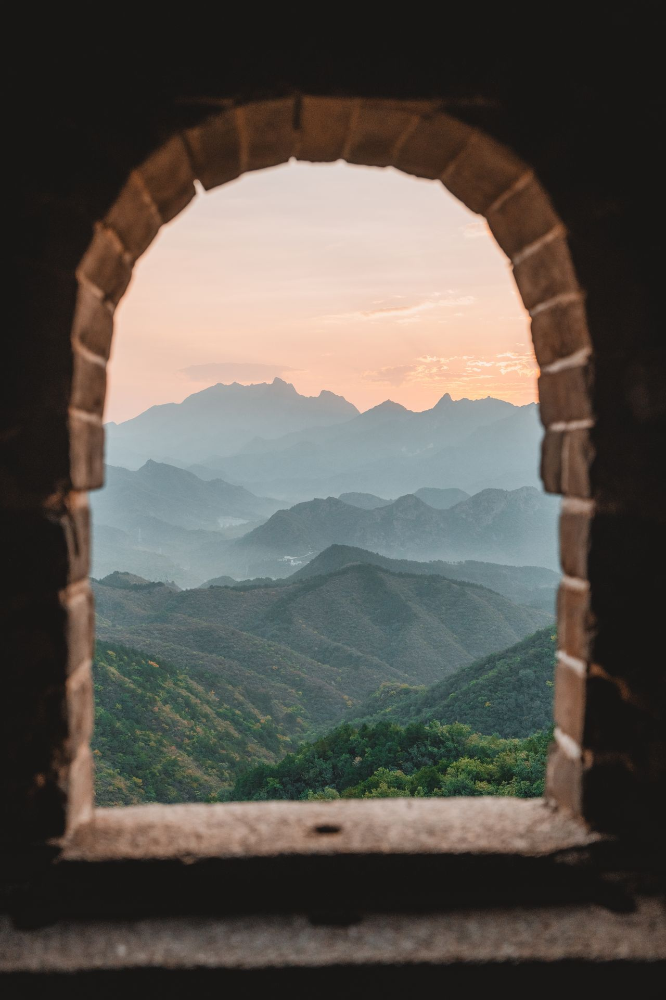

FOOD · 舌尖泰安
登完泰山，吃透泰安
「游山不来品三美，泰山风光没赏全」
 泰山豆腐 · 泉水点的灵魂
泰山豆腐 · 泉水点的灵魂
下山第一口热汤，胜过一切米其林必吃 No.1泰山三美¥25-38
白菜、豆腐、水——听着朴素，喝一口才懂什么叫"鲜到骨子里"。泰山泉水质纯，豆腐嫩而不老。
📍 红门/老县衙大院一带老鲁菜馆都有
宴席担当
泰山豆腐宴人均¥40-80
起源于帝王封禅祭祀的宴席，一桌豆腐做出上百种花样：三美豆腐、黄焖豆腐、豆腐脑、锅塌豆腐。
📍 泰山大剧院西侧主题餐厅 / 红门老店

本地人最爱红油炒鸡人均¥40
麻辣鲜香、鸡肉紧实入味，泰安人日常下饭第一名。下山庆功宴就它了，配着煎饼卷着吃更香。
📍 山脚沿街炒鸡店遍地，选人多的准没错

应景必带月饼 + 女儿茶¥30-60
中秋在岱顶分月饼、泡一壶泰山女儿茶，是这趟旅程的灵魂仪式感。山顶冲泡记得用保温杯接的热水。
📍 市区超市购齐带上山，山顶买很贵

市井小吃煎饼卷大葱¥5-10
市级非遗。小米/玉米发酵摊制，卷上大葱抹甜面酱，豪爽管饱，夜爬前当干粮扛饿一整夜。
📍 红门起点摊位、通天街夜市
尝鲜款
泰山赤鳞鱼时价较贵
泰山独有珍稀鱼种，清代贡品，干炸后蘸花椒盐，外焦里嫩。预算宽裕尝一次，刺少无腥。
📍 正宗鲁菜馆需提前问有无
干粮神器
范镇火烧¥3-5
外酥内软的百年名吃，背着上山当干粮，冷了也香。比面包扛饿，比士力架便宜。
📍 泰安任意早餐店/超市

伴手礼肥城桃 & 山货¥10-30
9月正是肥城桃（"群桃之冠"）上市季，还有泰山牙枣、东平湖咸鸭蛋、酱磨茄，回家伴手礼一站配齐。
📍 泰安站附近特产超市